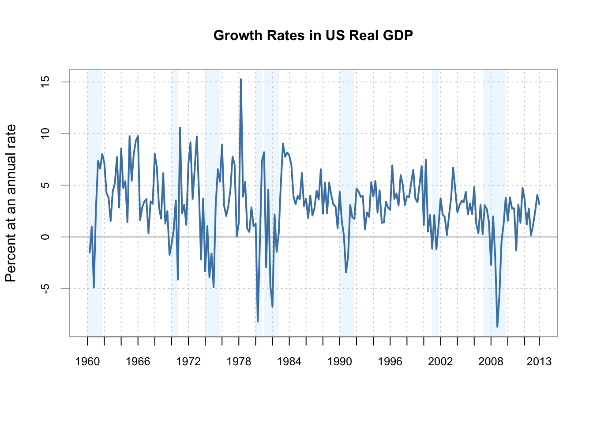

4.1 Estimating the Coefficients of the Linear Regression Model
In practice, the intercept \(\beta_0\) and slope \(\beta_1\)of the population regression line are unknown. Therefore, we must employ data to estimate both unknown parameters. In the following a real world example will be used to demonstrate how this is achieved. We want to relate test scores to student-teacher ratios measured in californian schools. The test score is the district-wide average of reading and math scores for fifth graders. Again, the class size is measured as the number of students divided by the number of teachers (the student-teacher ratio). As for the data, the California School dataset (CASchools) comes with a R package called AER, an acronym for Applied Econometrics with R. After installing the package with install.packages("AER") and attaching it with library("AER") the dataset can be loaded using the data function.
# install the AER package (once)
install.packages("AER")
# load the AER package
library(AER)
# load the the data set in the workspace
data(CASchools) Note that once a package has been installed it is available for use at further occasions when invoked with library() — there is no need to run install.packages("...") again!
For several reasons it is interesting to know what kind of object we are dealing with. class(object_name) returns the type (class) of an object. Depending on the class of an object some functions (such as plot() and summary()) behave differently.
Let us check the class of the object CASchools.
class(CASchools)## [1] "data.frame"It turns out that CASchools is of class data.frame which is a convienient format to work with.
With help of the function head() we get a first overview of our data. This function shows only the first 6 rows of the data set which prevents an overcrowded console output.
head(CASchools)## district school county grades students
## 1 75119 Sunol Glen Unified Alameda KK-08 195
## 2 61499 Manzanita Elementary Butte KK-08 240
## 3 61549 Thermalito Union Elementary Butte KK-08 1550
## 4 61457 Golden Feather Union Elementary Butte KK-08 243
## 5 61523 Palermo Union Elementary Butte KK-08 1335
## 6 62042 Burrel Union Elementary Fresno KK-08 137
## teachers calworks lunch computer expenditure income english read
## 1 10.90 0.5102 2.0408 67 6384.911 22.690001 0.000000 691.6
## 2 11.15 15.4167 47.9167 101 5099.381 9.824000 4.583333 660.5
## 3 82.90 55.0323 76.3226 169 5501.955 8.978000 30.000002 636.3
## 4 14.00 36.4754 77.0492 85 7101.831 8.978000 0.000000 651.9
## 5 71.50 33.1086 78.4270 171 5235.988 9.080333 13.857677 641.8
## 6 6.40 12.3188 86.9565 25 5580.147 10.415000 12.408759 605.7
## math
## 1 690.0
## 2 661.9
## 3 650.9
## 4 643.5
## 5 639.9
## 6 605.4We find that the dataset consists of plenty of variables and most of them are numeric.
By the way: an alternative to class() and head() is str() which is deduced from ‘structure’ and gives a comprehensive overview of the object. Try this!
Turning back to CASchools, the two variables we are intersted in (i.e. average test score and the student-teacher ratio) are not included. However, it is possible to calculate both from the provided data. To obtain the student-teacher ratios, we simply divide the number of students by the number of teachers. The avarage test score is the arithmetic mean of the test score for reading and the score of the math test. The next code chunk shows how the two variables can be constructed and how they are appended to CASchools which is a data.frame.
# compute STR and append it to CASchools
CASchools$STR <- CASchools$students/CASchools$teachers
# compute TestScore and append it to CASchools
CASchools$score <- (CASchools$read + CASchools$math)/2 If we ran head(CASchools) again we would find the two variables of interest as additional columns named STR and score (check this!).
Table 4.1 from the text book summarizes the distribution of test scores and student-teacher ratios. There are several functions which can be used to produce similar results within R:
mean()(computes the arithmetic mean of the provided numbers)sd()(computes the sample standard deviation)quantile()(returns a vector of the specified quantiles for the data)
The next code chunk shows how to achieve this. First, we compute summary statistics on the coloumns STR and score of CASchools. In order to have a nice display format we gather the computed measures in a data.frame object named DistributionSummary.
# compute sample averages of STR and score
avg_STR <- mean(CASchools$STR)
avg_score <- mean(CASchools$score)
# compute sample standard deviations of STR and score
sd_STR <- sd(CASchools$STR)
sd_score <- sd(CASchools$score)
# set up a vector of percentiles and compute the quantiles
quantiles <- c(0.10, 0.25, 0.4, 0.5, 0.6, 0.75, 0.9)
quant_STR <- quantile(CASchools$STR, quantiles)
quant_score <- quantile(CASchools$score, quantiles)
# gather everything in a data.frame
DistributionSummary <- data.frame(
Average = c(avg_STR, avg_score),
StandardDeviation = c(sd_STR, sd_score),
quantile = rbind(quant_STR, quant_score)
)
# print the summary to the console
DistributionSummary## Average StandardDeviation quantile.10. quantile.25.
## quant_STR 19.64043 1.891812 17.3486 18.58236
## quant_score 654.15655 19.053347 630.3950 640.05000
## quantile.40. quantile.50. quantile.60. quantile.75.
## quant_STR 19.26618 19.72321 20.0783 20.87181
## quant_score 649.06999 654.45000 659.4000 666.66249
## quantile.90.
## quant_STR 21.86741
## quant_score 678.85999The standard distribution (the Base R package) of R already contains a summary function which can be applied to objects of class data.frame. Type and execute summary(STR)!
As done for the sample data, we use plot() for a visual survey. This allows us to detect specific characteristics of our data, such as outliers which are hard to discover by looking at mere numbers. This time we add some additional arguments to the plot() function.
The first argument in our call of plot(), score ~ STR, is again a formula that states the dependent variable and the regressor. However, this time the two variables are not saved in seperate vectors but are columns of CASchools. Therefore, R would not find the variables without the argument data beeing correctly specified. data must be in accordance with the name of the data.frame to which the variables belong, in this case CASchools. Further arguments are used to change the appearance of the plot: while main adds a title, xlab and ylab are adding custom labels to both axes.
plot(score ~ STR,
data = CASchools,
main = "Scatterplot of TestScore and STR",
xlab = "STR (X)",
ylab = "Test Score (Y)"
)
The plot (figure 4.2 in the book) shows the scatterplot of all observations on student-teacher ratio and Test score. We see that the points are strongly scatterd and an apparent relationship cannot be detected by only looking at them. Yet it can be assumed that both variables are negatively correlated, that is we expect to observe lower test scores in bigger classes.
The function cor() (type and execute ?cor for further info), can be used to compute the correlation between 2 numerical vectors.
cor(CASchools$STR, CASchools$score)## [1] -0.2263627As the scatterplot already suggests, the correlation is negative but rather weak.
The task we are facing now is to find a line which fits best to the data. Of course we could simply stick with graphical inspection and correlation analysis and then select the best fitting line by eyeballing. However, this is pretty unscientific and prone to subjective perception: different students would draw different regression lines. On this account, we are interested in techniques that are more sophisticated. Such a technique is ordinary least squares (OLS) estimation.
The Ordinary Least Squares Estimator
The OLS estimator chooses the regression coefficients such that the estimated regression line is as close as possible to the observed data points. Thereby closeness is measured by the sum of the squared mistakes made in predicting \(Y\) given \(X\). Let \(b_0\) and \(b_1\) be some estimators of \(\beta_0\) and \(\beta_1\). Then the sum of squared estimation mistakes can be expressed as
\[ \sum^n_{i = 1} (Y_i - b_0 - b_1 X_i)^2. \]
The OLS estimator in the simple regression model is the pair of estimators for intercept and slope which minimizes the expression above. The derivation of the OLS estimators for both parameters are presented in Appendix 4.1 of the book. The results are summarized in Key Concept 4.2.
Key Concept 4.2
The OLS Estimator, Predicted Values, and Residuals
The OLS estimators of the slope \(\beta_1\) and the intercept \(\beta_0\) in the simple linear regression model are
\[\begin{align} \hat\beta_1 & = \frac{ \sum_{i = 1}^n (X_i - \overline{X})(Y_i - \overline{Y}) } { \sum_{i=1}^n (X_i - \overline{X})^2} \\ \\ \hat\beta_0 & = \overline{Y} - \hat\beta_1 \overline{X} \end{align}\]The OLS predicted values \(\widehat{Y}_i\) and residuals \(\hat{u}_i\) are
\[\begin{align} \widehat{Y}_i & = \hat\beta_0 + \hat\beta_1 X_i,\\ \\ \hat{u}_i & = Y_i - \widehat{Y}_i. \end{align}\]The estimated intercept \(\hat{\beta}_0\), the slope parameter \(\hat{\beta}_1\), and the residuals \(\left(\hat{u}_i\right)\) are computed from a sample of \(n\) observations of \(X_i\) and \(Y_i\), \(i\), \(...\), \(n\). These are estimates of the unkown true population intercept \(\left(\beta_0 \right)\), slope \(\left(\beta_1\right)\), and error term \((u_i)\).
We are aware that the results presented in Key Concept 4.2 are not very intuitive at first glance. The following interactice application aims to help You understand the mechanics of OLS. You can add observations by clicking into the coordinate system where the data are represented by points. If two or more observations are available, the application computes a regression line using OLS and some statistics which are displayed in the right panel. The results are updated as You add further observations to the left panel. A double-click resets the application i.e. all data are removed.
There are many possible ways to compute \(\hat{\beta_0}\) and \(\hat{\beta_1}\) in R. For example, we could implement the formulas presented in Key Concept 4.2 with two of R’s most basic functions: mean() and sum().
attach(CASchools) #allows to use the variables contained in CASchools directly
# compute beta_1
beta_1 <- sum((STR - mean(STR))*(score - mean(score))) / sum((STR - mean(STR))^2)
# compute beta_0
beta_0 <- mean(score) - beta_1 * mean(STR)
# print the results to the console
beta_1## [1] -2.279808beta_0## [1] 698.9329Of course there are also other and even more manual ways to do the same tasks. Luckily, OLS is one of the most widely-used estimation techniques. Being a statistical programming language, R already contains a built-in function named lm() (linear model) which can be used to carry out regression analysis.
The first argument of the function to be specified is, similar as in plot(), the regression formula with the basic syntax y ~ x where y is the dependent variable and x the explanatory variable. The argument data sets the data set to be used in the regression. We now revisit the example from the book where the relationship between the test scores and the class sizes is analysed. The following code uses lm() to replicate the results presented in figure 4.3 in the book.
# estimate the model and assign the result to linear_model
linear_model <- lm(score ~ STR, data = CASchools)
# Print the standard output of the estimated lm object to the console
linear_model##
## Call:
## lm(formula = score ~ STR, data = CASchools)
##
## Coefficients:
## (Intercept) STR
## 698.93 -2.28Let us add the estimated regression line to the plot. This time we also enlarge ranges of both axes by setting the arguments xlim and ylim.
# plot the data
plot(score ~ STR,
data = CASchools,
main = "Scatterplot of TestScore and STR",
xlab = "STR (X)",
ylab = "Test Score (Y)",
xlim = c(10, 30),
ylim = c(600, 720)
)
# add the regression line
abline(linear_model) 
Did you notice that this time, we did not pass the intercept and slope parameters to abline? If you call abline on an object of class lm that only contains a single regressor variable, R draws the regression line automatically!